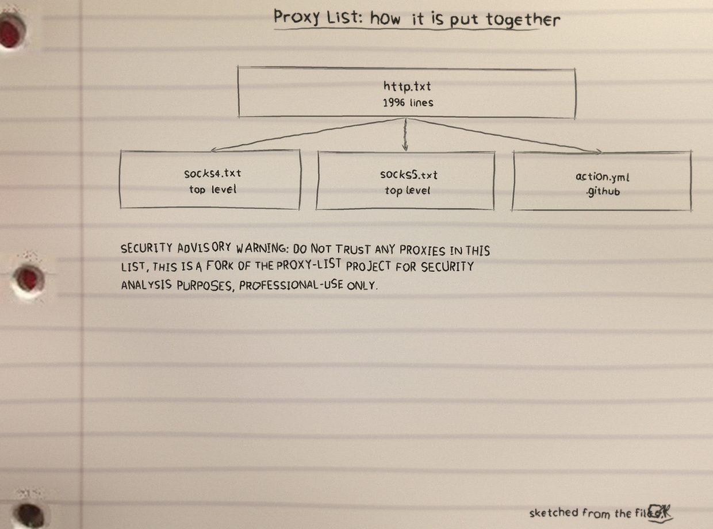
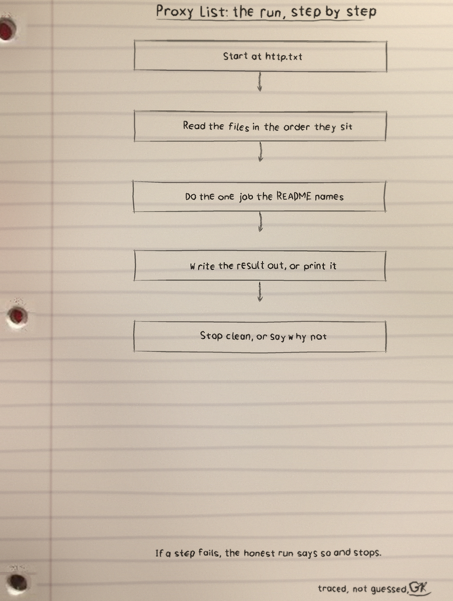
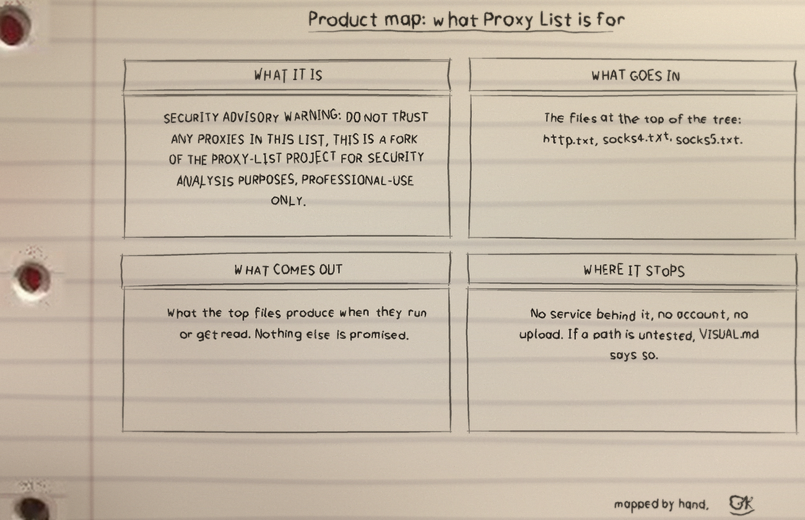

SECURITY ADVISORY WARNING: DO NOT TRUST ANY PROXIES IN THIS LIST, THIS IS A FORK OF THE PROXY-LIST PROJECT FOR SECURITY ANALYSIS PURPOSES, PROFESSIONAL-USE ONLY.
What it is
Proxy List: 7 files, 4930 counted lines across Text 4880, YAML 43, Markdown 7. One job, done in the open, in files you can read.
The biggest piece
http.txt carries the most
lines. If the project grows, that file is where the growth
lands first, for better or worse.
The honest gap
No test files yet. That is the honest gap, and the roadmap in the visuals folder says what the first one should cover.
Run it
The repo README has the exact commands for this one. The shape is the shape for most of my projects: clone it, read the top file first so you know what will happen, then run it on something you do not mind breaking.
$ git clone https://github.com/Epsilon0xCell/Proxy-List.git
$ cd Proxy-List
The code, as it sits in the repo
From http.txt, line 1 on. I did
not tidy it for the page. What you see is what the file has.
185.226.204.160:5713
103.210.206.26:8080
156.228.116.140:3128
122.52.141.182:8080
162.220.246.225:6509
72.10.160.93:12649
103.218.24.67:58080
188.253.112.218:80
156.228.115.84:3128
58.209.137.169:8089
101.47.31.33:20000
108.170.12.11:80
18.134.236.231:1080
103.163.244.106:1080
101.47.24.160:20000
103.158.162.18:8080
3.10.93.50:3128
103.158.253.162:8199
50.174.7.156:80
104.207.40.42:3128
222.67.12.40:1080
93.184.9.9:1080The files that matter
| File | Lines |
|---|---|
http.txt | 1996 |
socks4.txt | 1638 |
socks5.txt | 1246 |
.github/workflows/action.yml | 43 |
README.md | 7 |
banner.png | 0 |
Names doing the work: no named functions in the snapshot.
Drawn by hand
I sketch my projects on notebook paper so I have to understand them well enough to draw them. The full set, with the counts and how they were counted, is the Proxy-List-Visuals folder in the repo. Nothing is drawn over the binder holes. That is a rule, not a style.


